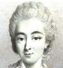
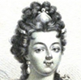
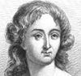
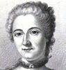
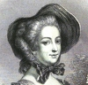

Alison Booth
Katzenelson-Rubashow, Rachel. The Plough Woman: Records of the Pioneer Women of Palestine. Rendered into English by Maurice Samuel. New York: Brown, 1932; Herzl, 1975. Hanover, NH: University Press of New England, 2002
NOT: Collective autobiography. This book consists of the personal narratives of Jewish women living in Palestine between 1904 and 1928. The Council of the Women Workers of Palestine decided in 1928 to put the book together, and invited about 50 women, most of whom did agricultural work in Palestine, to contribute their stories. These stories were edited and organized into a book by Rachel Katzenelson-Rubashow. Most of the book deals with the Jewish women's struggles with work and finding their place in their new homes in Palestine.
Search OCLC WorldCat for this title.
Search Google Books for this title.
Kavanagh, Julia. English Women of Letters: Biographical Sketches. 2 vols., Leipzig: Tauchnitz, 1862; 1872. London: Hurst & Blackett, 1863.
TOC: vol I: Aphra Behn; Miss Fielding; Madame D'Arblay; Miss Charlotte Smith; Mrs. Radcliffe. vol II: Mrs. Inchbald; Miss Edgeworth; Miss Austen; Mrs. Opie; Lady Morgan.
Search OCLC WorldCat for this title.
Search Google Books for this title.
Kavanagh, Julia. French Women of Letters: Biographical Sketches. 2 vols., Leipzig: Tauchnitz; London: Hurst & Blackett, 1862.
TOC: vol I : Mademoiselle de Gournay; Mademoiselle de Scudéry; Madame de la Fayette; Madame de Tencin; Madame Riccoboni. vol II: Madame de Genlis; Madame de Charrière; Madame de Krüdener; Madame Cottin; Madame de Staël.
Search OCLC WorldCat for this title.
Search Google Books for this title.
Kavanagh, Julia. Woman in France During the Eighteenth Century. 2 vols., London: Smith, Elder, 1850; 1864. Philadelphia: Lea & Blanchard, 1850. New York: Putnam, 1893.
TOC: Vol. 1: Madame du Maine; Countess of Verrue; Madame de Lambert; The Nun Tencin; Madame de Prie; Madame de Ferriol; Mademoiselle Aisse; Madame de la Popeliniere; Madame de Tencin; The Mistresses of Louis XV: Madame de Mailly; Madame de Vintimille; Madame de Chateauroux; Madame du Chatelet; Madame d’Epinay; Madame du Deffand; Mademoiselle de Lespinasse; Madame Geoffrin; Madame de Pompadour; Madame du Marchais; Madame du Barry.
Search OCLC WorldCat for this title.
Search Google Books for this title.
Kavanagh, Julia. Women of Christianity, Exemplary for Acts of Piety and Charity. New York: Appleton; London: Smith Elder, 1852. New York: Appleton, 1858; 1860; 1864; 1865; 1866; 1869.
“Pro-Catholic” yet including “ecumenical exemplars--Teresa of Avila, Elizabeth Fry, Sarah Martin--all coexisting peacefully” (M. Burstein, “From Good Looks,” 64-65). About 140 subjects. See also Pop Chart
TOC: The First Christian Martyrs; Sufferings of the Church; Heroism of Women; The Slave Blandina; Biblis; The Mother of Symphorian; Donata, Secunda, and Vestina; Vivia Perpetua and Felicitas; Potamians; Mary, Julia; Recluses; Female Relatives or Friends of the Greek Fathers; Christian Women of Rome in the Fourth Century; Paula; Eustochium; Marcella; Fabiola; Monica; Christian Princesses from the Fourth to the Fifth Century; Helena; Constantia; Flacilla; Pulcheria and her Sisters; Story of Athenais; Civilizing Influnce of Women; Power of Genevieve; Early Converts; Spirit of Proselytism; Clotidis; Bertha; Etheib erga; Necessity for Convents; Radegondo; Hilda; Bertilla; Bathildis; Increase of Monasteries; Apostolic Labours of the Nuns; Lioba; Celebrated Nuns and Princesses; Austrebertha; Raingarda; Giselle; Hroswrta; Herrade; Theodelinda; Ludmilla; Dombrowka; Maud; Alice; Cunegondes; Margaret of Scotland; Spirt of the Middle Ages; Elizabeth of Hungary; Heredotary Virtues; Hedwiges; Duchess of Poland; Margaret of Hungary; Kinga; Elizabeth, Queen of Portugal; Isabel of France; Hedwiges of Hungary; Clare; Agnes; Catherine of Sienna; Catherine of Sweden; Catherine of Genoa; Teresa of Avila; Decline of the Religious Spirit: Genovefa Malatesta; Paula Malatesta; Cecilia Gonzaga; Lucia of Marny; Women of the House of Gonzaga; Cassandra Fedele; Vicentina Lomelino; Isabella of Castile; Beatrix Galindo; Mary of Escobar; Mary and Catherine of Arragon; Elizabeth of York; Margaret Beaufort; Margaret Roper; Anne Askew; Lady Jane Grey; Lady Mildred Burleigh; Margaret of Lorraine; Margaret Paleologue; Frances of Amboise; Joan of Valois; Claude; Elizabeth of Austria; Louise of Vaudemont; The Women of the Seventeenth Century: Madame de Chantal; State of France: St Vincent of Paul; Mademoiselle Legras; Sisters of Charity; Madame de Goussault and the Association; The Foundlings; The General Hospital; Charity of the Women of the Seventeenth Century in France; Madeline du Bois; Noble Ladies visit the Hospitals; Martha d’Oraison; Madame de la Sabliere; Mademoiselle de Melun; Madame Heliot; Madame de St Beuve; Madame de Magnelia; Madame de St Pol; Madame de Noeuvillette; Madame de Ranfaing; Madame de Combe; Madame d’Aiguillon; The Princess Palatine; Madame de Longueville; Jeanne Biscot; Magdalen of Pazzi; Helena Cornaro; Elizabeth of Bohemia; The Empress Eleanor; The Women of England during the Seventeenth Century; Lady Alice Lucy; Lady Falkland; Lady Vere; Lady Langham; Lady Armyne; The Countess of Pembroke; Mary, Countess of Warwick; Mrs Godolphin; Lady Mainard; Margaret Baxter; Elizabeth Burnet; Lady Neville; Elizabeth Bury; Catherine Bovey; Lettice Pigot; Mary Astell; Lady Rachel Russel; Mrs Elizabeth Rowe; Lady Elizabeth Hastings; Hannah More; Countess of Huntingdon; Rosa Govona; Maria Agnesi; Duchess of Ventadour; Catherine Cahouet; Anne Auverger; Madame de Quatremere; Madame Necker; Madame de Fougeret; madame de Pastoret; Jeanne de Corbin; Sister Martha; Mary Lecsinska; Elizabeth Christina; Mary Federovna; The Montyon Prizes; Elizabeth Fry; Sarah Martin.
-
Madame du Barry
-
Madame du Maine
-
Madame de Tencin
-
Madame du Chatelet
-
Madame de Pompadour
Search OCLC WorldCat for this title.
Search Google Books for this title.
Keary, Margaret R. Great Scotswomen. [Glasgow] and London: MacLehose, 1933.
TOC: Margaret of Scotland, Queen and Saint; In the Middle Ages; Marie of Guise-Lorraine; Mary Queen of Scots; Some Women of Covenanting Times; Helen Walker; Flora Macdonald; Song-Writers; Mary Slessor; Dr. Elsie Inglis.
Contains illustrations of Queen Margaret and Malcolm Canmore, Saint Margaret's Chapel, Marie of Guise-Lorraine, Mary Queen of Scots, Flora Macdonald, Lady Anne Lindsay, Lady Nairne and her son, and the Nursing Sevices Memorial in Scotland.
Search OCLC WorldCat for this title.
Search Google Books for this title.
Keeling, Annie E. Eminent Methodist Women. London and Edinburgh: Kelly, 1889. 2d ed., 1893. Title variant: Susannah Wesley and Other Eminent Methodist Women. 3d ed., London: C. H. [sic] Kelly, 1897.
TOC: Susanna Wesley; Mary Bosanquet; Lady Mary Fitzgerald and Elizabeth Mortimer; Hester Ann Rogers; Lady Maxwell Darcy; Barbara Heck; Agnes Bulmer; Caroline Eliza Walker; Jane Tucker; Anne Lutton.
Chapter Titles: The Mother of Methodism, A Sister of the Poor, Two Friends of Mrs. Fletcher, A Life Hidden with God, A Scottish Methodist of the First Days, The Foundress of American Methodism, A Christian Poetess, One "Led by the Spirit," A Teacher of the Heathen, A Consecrated Life of Joy.
British Library.
Search OCLC WorldCat for this title.
Search Google Books for this title.
K[elty], M[ary] A[nn]. Biography for Young Ladies. London: Kendrick, 1839.
TOC: Princess Charlotte of Wales; Mrs. James Fordyce; Mrs. Hannah Moore; Miss Elizabeth Smith; Mrs. Rowe; Mrs. Elizabeth Carter; Lady Russel; Lady Jane Grey.
British Library. Rare, non-circulating, and not available online (2011). Purchased copy has damaged brown cloth covers (dim impressions of floral frames), newer spine with gold lettering. Names spelled thus in contents, i.e. "Moore" for "More" and "Russel" for Russell. Grey and Gray are alternate spellings in many works. Frontispiece engraving of greyhound and lilies. Octavo with gilded page edges (216 pp.). Epigraph in small caps on title page: "Favour is deceitful, and beauty is vain; but a woman that feareth the Lord, she shall be praised." Proverbs, XXX. 30. Short preface; "A young lady might, from reading the life of Hannah Moore, be desirous of imitating her ardent desire of instructing the poor; she might attend a Sunday School for that purpose, and, for trying to benefit others, God might reward her by blessing his word to her own soul" (iv). The examples instill the "virtues, which every mother would be delighted to see blossoming..." while the book aims "to amuse, instruct, and edify Young Ladies" (v). At the close of Lady Jane Grey's biography a horizontal line marks off direct address: "And now, my dear young friends, reflect, I entreat you, upon the information to be derived from the perusal of my little volume." Specific comments on each subject leads to the summation, "make the Bible your guide" and a final couplet commending a heavenly reward for good conduct (210-16).
Search OCLC WorldCat for this title.
Search Google Books for this title.
Kelty, Mary Ann. Memoirs of the Lives and Persecutions of the Primitive Quakers, Exemplifying the Obedience of Faith in Some of the Early Members of the Society. 2d ed., London: Harvey & Darton, 1844.
NOT:=male. Centered on George Fox.
Search OCLC WorldCat for this title.
Search Google Books for this title.
Kendrick, Miss M., and Mrs. L. M. Child. The Gift Book of Biography for Young Ladies. London and Edinburgh: T. Nelson, 1848. London: T. Nelson, 1849; 1850. London and Edinburgh: Nelson, 1854.
See How To Make It as a Woman, 52-53.
TOC: Princess Charlotte of Wales; Mrs. James Fordyce; Mrs. Hannah More; Miss Elizabeth Smith; Mrs. Rowe; Mrs. Elizabeth Carter; Lady Russel; Lady Jane Gray; Madame Lavater; Mrs. Flaxman; Mrs. Howard; Catherine De Bora; Concluding remarks.
Lavater, Flaxman, de Bora by Child, from Good Wives (1833). See also Pop Chart
Search OCLC WorldCat for this title.
Search Google Books for this title.
Ker, Cecil. Women Who Have Made Good. New York: Platt & Peck, 1916.
TOC: Jane Austen; Mary Lyon; Elizabeth Browning; Charlotte Brontë; Clara Schumann; George Eliot; Jenny Lind; Clara Barton; Rosa Bonheur; Louisa Alcott.
Search OCLC WorldCat for this title.
Search Google Books for this title.
The King's Daughters: The Life Stories of Three Noble Women Distinguished for Their Service in the Cause of Christ. London and Glasgow: Pickering & Inglis, [1930].
British Library. Biographies of Mary Slessor and Frances Ridley Havergal by Esther E. Enock and of Pandita Ramabai by J. Chappell and H.S. Dyer.
TOC: "Ma," the Missionary Heroine of Calabar, Mary Slessor; Frances Ridley Havergal, the Christian Poetess; Pandita Ramabai.
Search OCLC WorldCat for this title.
Search Google Books for this title.
King, Hannah T. The Women of the Scriptures. Salt Lake City: Deinford, 1878.
Search OCLC WorldCat for this title.
Search Google Books for this title.
King, William C., ed. Woman, Her Position, Influence, and Achievement Throughout the Civilized World: Her Biography, Her History, from the Garden of Eden to the Twentieth Century. Prepared by Carefully Selected Writers. Springfield, MA: King-Richardson, 1901; 1902; 1903.
Frontispiece Martha Washington. Dozens of one-two pp. bios. arranged in six chronological “books,” with historical summaries of each period. Book Seven, the longest (@150 pp.), “Contribution of Woman to Modern Civilization,” consists of essays on separate vocations: “Woman in Literature,” “Woman in Philanthropy,” etc. Index. Illustrations include many group portraits.
Search OCLC WorldCat for this title.
Search Google Books for this title.
Kirkes, C. Biographies of Great and Good Women. Translated by H. Kitayama. Tokyo: n.p., 1889.
TOC: Princess Alice; Margaret Roper; Florence Nightingale; Gertrude de la Garaye; Elizabeth Gilbert. *Pop Chart.
Search OCLC WorldCat for this title.
Search Google Books for this title.
Kirkland, Winifred Margaretta, and Frances Kirkland. Girls Who Became Artists. New York and London: Harper, 1934.
TOC: Wanda Gag, Who Followed Her Own Way; Pamela Bianco, Famous Since She Was Twelve; Marguerite Kirmse, Etcher of Dogs; Margaret Bourke-White, Photographer of Steel; Meta Warrick Fuller, Leading Sculptor of Her Race; Cecilia Beaux, Painter Behind the Portraits; Madame le Brun, Playmate of Marie Antoinette; Angelica Kauffmann, the Picture-Worker; Janet Scudder, a Girl Who Made Her Own Name; Anna Hyatt Huntington, Who Loved Horses; Malvina Hoffman, Sculptor of Types.
Search OCLC WorldCat for this title.
Search Google Books for this title.
Klein, Hermann. Great Women-Singers of My Time. London: Routledge; New York: Dutton, 1931.
TOC: The Victorian Prima Donna; Theresa Tietjens, True Successor to Jenny Lind; Adelina Patti: “Queen of Song”; Pauline Lucca and Her Renowned Rivals; Christine Nilsson: the Second “Swedish nightingale”; Ilma Di Murska, the Brilliant but Eccentric; The Enchanting Zelia Trebelli; Emma Albani: Canada's Famous Songstress; Lillian Nordica: the American Soprano; Three Late-Victorians; Marcella Sembrich; Nellie Melba; Emma Calve; Some Celebrated Contraltos; Marietta Alboni; Janet Monach Patey; Sofia Scalchi; Giulia Ravogli; Ernestine Schumann-Heink; Antoinette Sterling; Great Wagnerian Sopranos; Amalia Materna; Marianne Brandt; Rosa Sucher; Therese Vogl; Hedwig Reicher-Kindermann; Therese Malten; Lilli Lehmann; Katharina Klafsky; Milka Ternina.
Search OCLC WorldCat for this title.
Search Google Books for this title.
Knapp, Samuel Lorenzo. Female Biography: Containing Notices of Distinguished Women, in Different Nations and Ages. Philadelphia: Wardle, 1833; 1836; 1842; 1843; 1846. New York: Carpenter; Baltimore and Phoenix: Wood, 1834. Philadelphia: Sower, Barnes & Potts, 1868.
British Library. NOT= Reference. 1846 edition, epigraphs from Milton and Wordsworth on excellence of women. Introduction disputes the common view that Eastern women were all oppressed. "The Jewish history abounds in instances of female distinction" (iii). So on through Greek, Roman, and Arab civilization, each affording some women education and achievement. Even Native Americans have some respect for women, according to Knapp's anecdotal evidence. He advocates the current expansion of education for women in the U.S., and urges "equality among the sexes" but different pursuits (vii). Great men and a great nation are fostered by educated mothers, and further in this vein. A postscript (p. 502) precedes the double-columned table of contents: here he admits copying much from other sources, as well as introducing names otherwise not included in lists of notable women. The alphabetical biographies are tightly printed without illustrations; a small break with a straight line precedes the name in small caps. Some bios are short paragraphs (3 on a page), others are extended narratives, 2, 5, or even 10 pages long. About 172 persons.
Search OCLC WorldCat for this title.
Search Google Books for this title.
Kohut, George Alexander. Some Jewish Heroines. A Chapter in Martyrology. [n.p., 1920s?] ].
NOT:=reference; list. Cover title: A list of women Maraños who died in autos-da-fé or were imprisoned. Photocopy from University of Washington, Seattle, lacks cover and has stapled pp. 5 and 6 after pages 7 and 8. Kohut is repeatedly identified with "New York City." Dedication "to/ Frau Ruth Lazarus/ (Nahida Remy)/ The inspired champion of/ Israel's Rights and Religion,/ whose genius and womanly sympathies/ are now forever enlisted in/ The Cause of Jewish Emancipation,/ this list of martyrs of her sex, for/ whom she has so nobly pleaded/ in history, art and literature,/ is gratefully inscribed by/ the writer." Centered, with mixture of larger and smaller caps and lower case. Pages 3-9 are two-column text: introduction followed by alphabetical paragraphs on 67 Jewish women from Spain and Portugal who died in the Spanish Inquisition, followed by 63 notes on pages 8 and 9. Kohut refers to various recent books on "Israel's noble women," including a psychological study on the "Jewish Woman" by Nahida Remy, now Mrs. Lazarus. Kohut treats "Jewish Woman" as a singular ("She suffered much") before inviting "us" to "tarry awhile in the gloomy shades of the merciless past and witness the heroism of Israel's women, who, not in intellect, but in virtue, sought to glorify their creed and to hallow the name of their Creator!" (3). The entries simply identify the individuals ("wife of" etc.) and the record of their punishment, often in cross reference (continuing prose) to the preceding entry or shared fates at particular spectacles of auto-da-fe. Published in the journal American Jewess, Volume II, Number 1, pages 43-48; Full text available online at http://quod.lib.umich.edu/a/amjewess/taj1895 (10 June 2011).
Search OCLC WorldCat for this title.
Search Google Books for this title.
Kuyper, Abraham. Women of the Old Testament. Translated by Henry Zylstra. Grand Rapids, MI: Zondervan, 1933; 1934; 1936; 1941; 1961; 1972; 1982.
TOC: The Mother of Us All; Ada and Zillah; Sarah; Hagar; Keturah; Rebekah; Deborah the Nursemaid; Leah; Rachel; Judith and Bashemath; Dinah; Tamar; Asenath; Shiphrah and Puah; Jochebed; Pharaoh's Daughter; Miriam; Zipporah; Rahab; Deborah; Jael; Jephthah's Daughter; Manoah's Wife; Delilah; Naomi; Orpah; Ruth; Hannah; Ichabod's Mother; Abigail; Michal; Bathsehba; The Woman of Tekoah; The Witch of Endor; The Peasant Woman of Bahurim; The Real Mother of the Illegitimate Child; Rizpah; Job's Wife; The Queen of Sheba; Jeroboam's Wife; The Widow of Zeraphath; Jezebel; The Shunammite; Namaan's Wife's Little Jewish Maid; Athaliah; Jehosheba; Hulda; Noadiah; Vashti; Esther.
Search OCLC WorldCat for this title.
Search Google Books for this title.